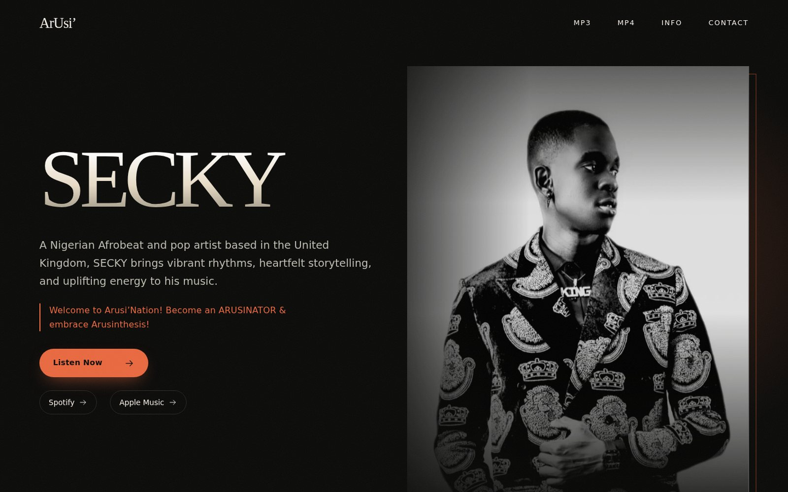
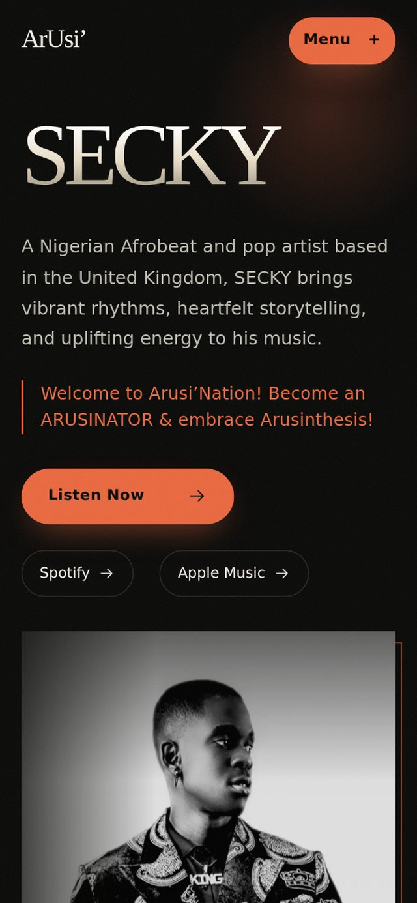
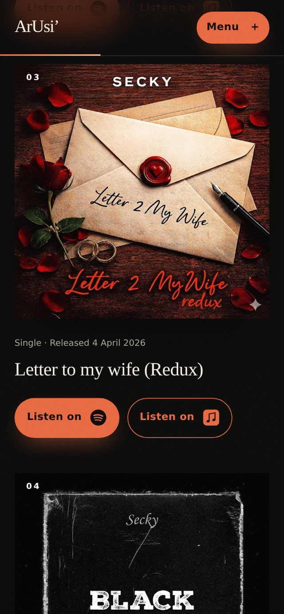
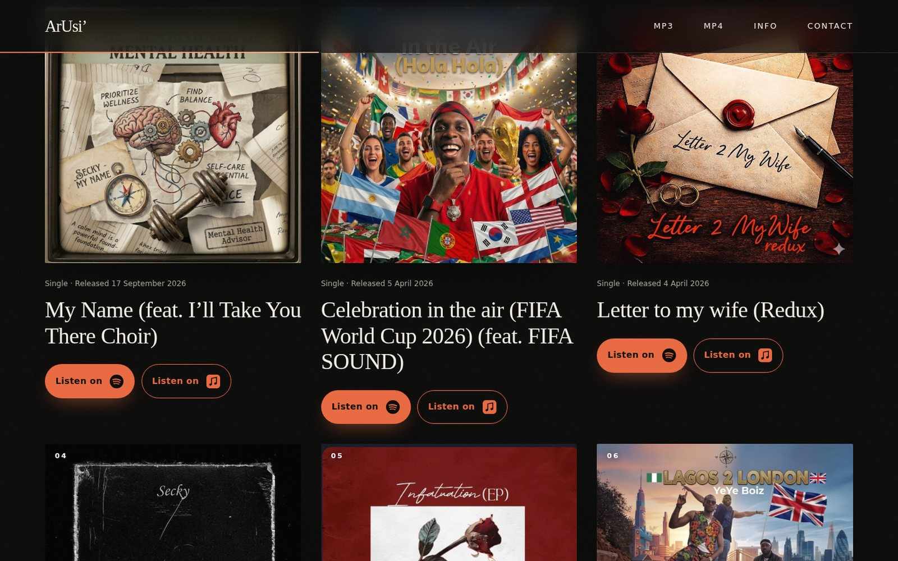

SECKY
An official website for a Nigerian Afrobeat and pop artist: music, videos, story and booking on one fast page.

The brief
SECKY is a Nigerian Afrobeat and pop artist based in the United Kingdom. He needed one official place online where a fan can hear the music, watch the videos, read his story, and where a promoter can find a booking address. No shop, no accounts, no noise. One page that loads fast and does those four jobs well.
The navigation is deliberately short: MP3, MP4, INFO and Contact. MP3 and MP4 are only labels. Nothing is downloadable, and no video file is hosted on the site.
What it does
- A hero that leads with the name. SECKY is the one dominant heading, with a short description, his own words as a motto, a studio portrait, a Listen Now button and links to his Spotify and Apple Music profiles.
- An artwork led catalogue. Six releases (singles and EPs) shown as large square covers with the date and type. Each release has its own Spotify and Apple Music buttons that go to that exact release, not to a profile page.
- Four official music videos. Shown as 16:9 previews that cost nothing to load. The YouTube player loads only when a visitor presses play, through the privacy enhanced embed, with a Watch on YouTube link as a fallback. Nothing autoplays.
- A featured release slot. When one release is marked as featured, a section appears with a spinning record and the listening links. The site works honestly without one.
- A short biography and a second portrait. The INFO section holds the biography in his own supplied words.
- A public booking email. A plain mailto link. If the address is ever missing or malformed, the page says so instead of showing a broken link.
- Honest links. Only links with a label and a valid HTTPS address are shown, and every external link opens safely in a new tab.


How it looks and moves
The first design study was a light, record sleeve idea: ivory paper, oversized serif lettering and a rust coloured listen button. After review it became a darker, more cinematic page: an orange spotlight glow, film grain and a gradient title, with a header that turns to frosted glass as you scroll and a thin progress line across the top.
Motion is there to guide, not to show off: the hero enters in stages, the portrait drifts slowly, a word strip moves across the page, sections reveal as you scroll, catalogue cards are numbered and glow on hover, and the video frames get letterbox bars and a pulsing play button. Every one of these respects the reduced motion setting, and if JavaScript fails the content simply appears without animation.

The size of it
Counted from the project files and from a build I ran myself.
- React 19, TypeScript, Vite and Tailwind CSS 4. A strict type check runs before every build, and the production bundle is about 77 kB of JavaScript and 9 kB of CSS after compression.
- Responsive images. Each portrait is delivered as WebP at three sizes with a JPEG fallback. The hero image went from about 153 kB to between 32 and 130 kB depending on the screen, and everything below the first screen loads lazily.
- No backend at all. It is a static site, so it can be hosted for free and has almost nothing to break.
Content lives in data, not in components
The README, a release management guide and a content checklist document exactly how to add a release, so the site can be maintained without me.
Checked, and honest
The project has a written QA report. It was checked at 320, 390, 768, 1440 and 1920 pixel widths, and seven text and background colour pairs were measured against the 4.5 to 1 contrast standard. The report says plainly what was not checked: video playback depends on YouTube, and email delivery needed a real test.
One more habit I am glad I kept: biography claims that need evidence, such as awards, are treated as the client’s own copy, tracked on a list of items waiting for proof, and not repeated by me as fact.
What I learned
Small projects reward discipline. With no backend and one page, the quality comes from the details: honest links, images that load fast, a player that waits to be asked, and a client who can understand what you built. I also made sure the client owns the domain and every hosting account from the start, with me added as a helper, so the site never depends on me.
Need an official website for your music
A clear page that gets people listening and gets promoters in touch.